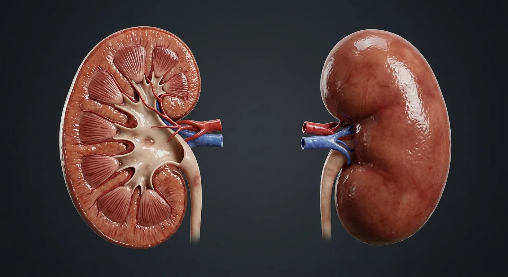

ORGAN → UNDER THE LENS
Nephron and glomerulus cutaway
Tap to compare the organ region with a tissue-level teaching illustration.
Read about Afferent arteriole ↓Coronal section plus a nephron: filtration, reabsorption, secretion and urine concentration.

Each kidney filters about 180 litres of plasma a day and returns all but 1–2 litres to the blood. Filtration happens in the renal corpuscle, where glomerular capillaries sit inside Bowman's capsule. The filtrate then passes through the proximal tubule (bulk reabsorption), the loop of Henle (concentration by countercurrent multiplication), the distal tubule (hormone-controlled fine tuning) and the collecting duct (final water handling under vasopressin). Nephrons drain via the papilla into minor and major calyces, the renal pelvis and the ureter.
These are educational cutaways, not literal magnifications of an organ pixel or laboratory slides. A ring marks the approximate tissue region; part-specific lines appear only where identifiable.
Tap to compare the organ region with a tissue-level teaching illustration.
Read about Afferent arteriole ↓Tap to compare the organ region with a tissue-level teaching illustration.
Read about Glomerular capillaries ↓These 15 structures describe anatomy related to the chapter’s regional illustration. Each entry separates location, function and a clinical point.
A tough transparent layer of collagenous tissue directly on the kidney surface, surrounded by perinephric fat.
What it doesProtects the parenchyma and maintains its shape.
Clinical connectionIt does not stretch: swelling inside the capsule in acute inflammation causes the dull loin pain of pyelonephritis.
The outer 1 cm, containing all the renal corpuscles, the proximal and distal convoluted tubules, and cortical tissue dipping between pyramids as the renal columns.
What it doesSite of blood filtration and most solute reabsorption.
Clinical connectionThinning or scarring of the cortex on ultrasound indicates chronic kidney disease.
8–18 cone-shaped regions of medulla, striped by the straight loops of Henle, vasa recta and collecting ducts that run through them.
What it doesCreate and exploit the osmotic gradient that concentrates urine.
Clinical connectionTheir striated appearance is lost in medullary cystic disease and in the scarring of chronic reflux nephropathy.
The apex of each pyramid, pierced by dozens of duct openings (area cribrosa) that empty into a minor calyx.
What it doesThe final exit point for urine from the nephron system.
Clinical connectionAnalgesic abuse, diabetes and sickle-cell disease can cause papillary necrosis, with sloughed tissue in the urine.
Cup-like minor calyces (8–18) receive urine from papillae and join into 2–3 major calyces that funnel into the renal pelvis.
What it doesCollect urine and conduct it to the pelvis; their smooth muscle helps propel it.
Clinical connectionThis is where renal stones form and lodge, causing the colicky flank pain of renal colic.
The funnel-shaped expansion of the upper ureter inside the hilum.
What it doesCollects urine from the major calyces and channels it into the ureter.
Clinical connectionDilatation of the pelvis (hydronephrosis) is the ultrasound sign of an obstructed outflow tract.
A 25–30 cm muscular tube with an inner mucosa, muscular coat and outer adventitia, running retroperitoneally to the bladder.
What it doesPropels urine to the bladder by peristaltic waves (1–5/min), not by gravity.
Clinical connectionThree natural narrowings — pelviureteric junction, pelvic brim and vesicoureteric junction — are where stones impact.
The medial slit where structures enter and leave. Anterior to posterior: renal vein, renal artery, renal pelvis ("VAU").
What it doesGateway for vessels, nerves, lymphatics and the ureter.
Clinical connectionSurgeons use this fixed order when clamping the hilum during nephrectomy or transplant.
A short, wide branch of the abdominal aorta at L1/L2 dividing into five segmental arteries — these are end-arteries with no anastomosis. Branching continues: interlobar → arcuate → interlobular → afferent arteriole.
What it doesDelivers ~1.2 litres of blood per minute for filtration.
Clinical connectionNarrowing (renal artery stenosis) causes secondary hypertension through excess renin release.
Leaves the hilum to drain into the inferior vena cava. The left renal vein is longer, passing between the aorta and the superior mesenteric artery and receiving the gonadal vein.
What it doesReturns filtered blood to the systemic circulation.
Clinical connectionThe left vein can be compressed between aorta and SMA ("nutcracker syndrome"), causing haematuria and left varicocele.
A tuft of fenestrated capillaries invaginating a double-walled capsule. Between them, the filtration barrier: fenestrated endothelium, fused basement membrane and podocyte foot processes with slit diaphragms.
What it doesUltrafiltration of plasma — water and small solutes pass; cells and proteins do not.
Clinical connectionDamage to the barrier leaks protein (nephrotic syndrome) or blood (nephritic syndrome) into the urine.
The longest, widest segment, lined by cells with a dense brush border of microvilli and many mitochondria.
What it doesReabsorbs ~65% of filtered water and sodium, and 100% of glucose and amino acids; secretes drugs and acids.
Clinical connectionSGLT2 inhibitors act on this tubule and can benefit selected patients with diabetes, heart failure or chronic kidney disease; use is a clinical decision.
A hairpin with a thin descending limb (water-permeable) and a thick ascending limb (actively pumps out NaCl but is water-impermeable), dipping into the medulla.
What it doesCountercurrent multiplication builds the medullary osmotic gradient that allows urine to be concentrated.
Clinical connectionLoop diuretics such as furosemide block the Na-K-2Cl cotransporter here and are the most powerful diuretics.
Shorter than the proximal tubule, with fewer microvilli, and the site where the macula densa contacts its own glomerulus.
What it doesFine-tunes sodium, potassium, calcium and pH under aldosterone, PTH and vasopressin control.
Clinical connectionThiazide diuretics act here; the macula densa senses sodium delivery and drives tubuloglomerular feedback.
Receives filtrate from many nephrons and runs through the medulla to open on a papilla. Principal cells respond to vasopressin and aldosterone; intercalated cells handle acid.
What it doesDetermines final urine volume and concentration.
Clinical connectionWithout vasopressin (diabetes insipidus) the duct stays water-impermeable and 10–20 L of dilute urine is passed daily.
These 5 additional entries give anatomical context. They are deliberately not assigned a photographic pin on the regional image.
Related deep chapters: Nephron · kidney microanatomy.
Brings arterial blood into glomerular capillary tuft.
What it doesRegulates incoming glomerular pressure.
Clinical connectionDiameter influences filtration rate.
Fenestrated capillary loops between afferent and efferent arterioles.
What it doesPass plasma water and small solutes toward Bowman space.
Clinical connectionDamage may permit albumin or red cells into urine.
Vessel leaves glomerulus and feeds downstream capillary network.
What it doesMaintains filtration pressure and supplies cortical/medullary beds.
Clinical connectionUnique arteriole between two capillary beds.
Parietal squamous layer and visceral podocyte layer enclosing Bowman space.
What it doesCollects primary filtrate from glomerulus.
Clinical connectionFiltrate flows from urinary pole to proximal tubule.
Specialized basement membrane shared by capillary endothelium and podocytes.
What it doesContributes size/charge selectivity.
Clinical connectionThickening or injury can alter permeability.
Short answers grounded in the structures described above. Use the illustrated guide for anatomical context.
Kidneys filter blood, return most water and useful solutes to circulation, and excrete wastes in urine. They also help regulate electrolytes, blood pressure and acid-base balance.
Filtrate passes through nephron tubules into collecting ducts, then through calyces and the renal pelvis. A ureter carries the resulting urine to the bladder.
The outer 1 cm, containing all the renal corpuscles, the proximal and distal convoluted tubules, and cortical tissue dipping between pyramids as the renal columns. Function: Site of blood filtration and most solute reabsorption.
A tuft of fenestrated capillaries invaginating a double-walled capsule. Between them, the filtration barrier: fenestrated endothelium, fused basement membrane and podocyte foot processes with slit diaphragms. Function: Ultrafiltration of plasma — water and small solutes pass; cells and proteins do not.
Function: Countercurrent multiplication builds the medullary osmotic gradient that allows urine to be concentrated. A hairpin with a thin descending limb (water-permeable) and a thick ascending limb (actively pumps out NaCl but is water-impermeable), dipping into the medulla.
Follow these connected structures and body systems in the illustrated atlas.
 Nephron · kidney microanatomyFollow filtration through glomerular barrier, segmented tubules, medullary loop and collecting ducts.↗
Nephron · kidney microanatomyFollow filtration through glomerular barrier, segmented tubules, medullary loop and collecting ducts.↗ Urinary bladderA detrusor-muscle reservoir with a smooth trigone and a two-stage sphincter.↗
Urinary bladderA detrusor-muscle reservoir with a smooth trigone and a two-stage sphincter.↗ HeartA four-chambered muscular pump with four valves and its own electrical conduction system.↗
HeartA four-chambered muscular pump with four valves and its own electrical conduction system.↗ LiverThe body's chemical plant: metabolism, bile, clotting factors, detoxification and storage.↗
LiverThe body's chemical plant: metabolism, bile, clotting factors, detoxification and storage.↗General anatomy references and related source chapters for continued study. These links do not make the digital illustrations clinical images or certify every anatomical variant.
This educational page is not medical advice and has not undergone formal clinical peer review. Spotted an error? Contact the editor.
Open the realistic interactive plate, label lines, focus view and self-test.